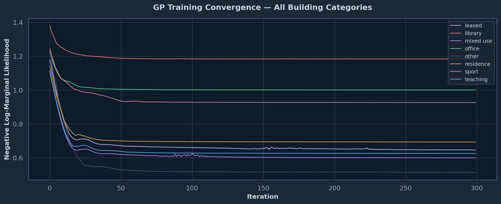
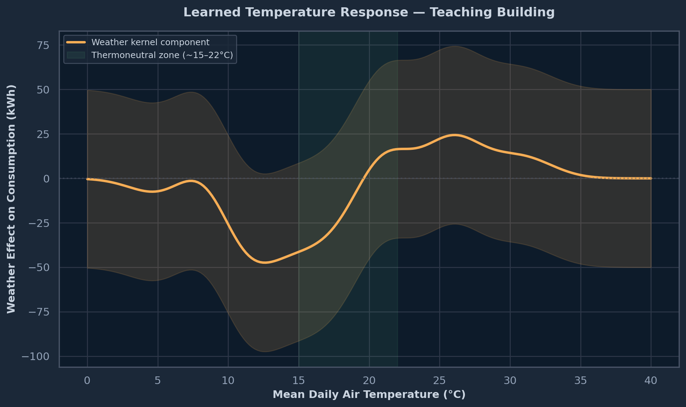

Exploring the UNICON open dataset — electricity, gas, and water consumption across La Trobe University’s five campuses (2018–2021). Schema discovery, temporal analysis, and weather correlations.
Author
Daniel Huencho
Published
January 26, 2026
Introduction
UNICON (UNIversity CONsumption) is a large-scale open dataset of electricity, gas, and water consumption from La Trobe University, Victoria, Australia. It covers 5 campuses, 71 buildings, and spans 2018–2021 — capturing the full COVID-19 pandemic period.
This EDA explores the dataset structure, data quality, temporal patterns, and weather correlations — establishing a foundation for probabilistic energy consumption modelling.
Key features:
Three utility types: electricity (15-min), gas (hourly), water (daily)
Hierarchical metering: campus NMI → building → submeter
Weather data at 1-minute granularity from 5 stations
Academic calendar and energy conservation event annotations
Data Extraction
The dataset is distributed as a single zip archive (~142 MB compressed, ~950 MB uncompressed) containing 11 CSV files. We extract idempotently — skipping extraction if the files already exist.
Code
ifnot EXTRACT_DIR.exists():print(f"Extracting {ZIP_PATH} to {EXTRACT_DIR}...")with zipfile.ZipFile(ZIP_PATH, 'r') as zf: zf.extractall(EXTRACT_DIR)print("Done.")else:print(f"Data already extracted at {EXTRACT_DIR}")extracted_files =sorted(EXTRACT_DIR.glob("*.csv"))print(f"\nFound {len(extracted_files)} CSV files:")for f in extracted_files: size_mb = f.stat().st_size / (1024*1024)print(f" {f.name:45s}{size_mb:>8.1f} MB")
The EDA above reveals rich temporal structure — seasonal cycles, weekly occupancy patterns, weather sensitivity, and abrupt regime shifts from COVID-19 and energy conservation measures (ECMs). A natural next step is to build a predictive model that decomposes these patterns into interpretable components while providing calibrated uncertainty estimates.
Gaussian Processes (GPs) are ideally suited for this task. Unlike point-estimate models (XGBoost, linear regression), a GP defines a distribution over functions, yielding both a mean prediction and a confidence band at every point. Formally:
where \(m(\mathbf{x})\) is the mean function and \(k(\mathbf{x}, \mathbf{x}')\) is the kernel (covariance function) encoding our structural assumptions about how energy consumption behaves.
Compositional Kernel Design
The key insight from the Automatic Statistician programme (Duvenaud et al., 2013; Lloyd et al., 2014) is that complex time series can be decomposed into interpretable components through additive kernel composition. If \(k = k_1 + k_2 + \cdots\), then the GP decomposes into independent additive functions \(f = f_1 + f_2 + \cdots\), each capturing a distinct physical mechanism.
We design a 6-component additive kernel for building energy consumption:
Hyperparameters (lengthscales, variances, periods) are learned by maximising the log-marginal likelihood, which naturally balances data fit against model complexity (Occam’s razor):
This allows us to explain what drives consumption at any point: “on this day, the trend contributes +50 kWh, the weekly cycle −120 kWh (it’s Sunday), and the weather adds +80 kWh (heatwave).”
Anomaly Detection
The GP’s calibrated uncertainty provides a principled anomaly score:
Under the model, \(z \sim \mathcal{N}(0,1)\). Days with \(|z| > 2.5\) (expected false positive rate ≈ 1.2%) are flagged as anomalous — contextually, accounting for time-of-week, season, and weather.
Data Preparation for GP Modelling
We select one representative building per category from the 8 building types in the UNICON dataset. This enables direct comparison of how the GP captures fundamentally different consumption dynamics across building functions.
Design choices:
Daily aggregation — reduces each building from ~140,000 rows (15-min) to ~1,500 rows (daily), making ExactGP tractable (\(\mathcal{O}(n^3) \approx 15\) seconds per building)
Temporal train/test split — train on 2018–2019 (pre-COVID), test on 2020–2022 (includes COVID, ECMs). This tests true out-of-distribution generalisation
We define the EnergyGP model class with our 6-component additive kernel and train it on all 8 buildings. Each building learns its own hyperparameters, enabling direct comparison of how different building types structure their consumption.
Code
# ─── Feature dimension indices (after standardisation) ───weather_dims =list(range(0, 6)) # temp_mean ... wind_speedcalendar_dims =list(range(6, 10)) # is_holiday, is_semester, is_exam, is_weekenddow_dim = [10] # day_of_weekdoy_dim = [11] # day_of_yearevent_dims =list(range(12, 15)) # post_event_1, post_event_2, post_event_3class EnergyGP(ExactGP):"""Compositional GP for building energy consumption. Additive kernel with 6 components, each capturing a distinct physical mechanism in building energy dynamics. """def__init__(self, train_x, train_y, likelihood):super().__init__(train_x, train_y, likelihood)self.mean_module = ConstantMean()# Component 1: Long-term trend (RBF over day-of-year)self.k_trend = ScaleKernel(RBFKernel(active_dims=doy_dim))# Component 2: Annual seasonality (Periodic, P ≈ 365 days)self.k_annual = ScaleKernel(PeriodicKernel(active_dims=doy_dim))# Component 3: Weekly periodicity (Periodic, P ≈ 7 days)self.k_weekly = ScaleKernel(PeriodicKernel(active_dims=dow_dim))# Component 4: Weather response (ARD-RBF over 6 weather features)self.k_weather = ScaleKernel( RBFKernel(ard_num_dims=len(weather_dims), active_dims=weather_dims) )# Component 5: Calendar effects (ARD-RBF over academic calendar)self.k_calendar = ScaleKernel( RBFKernel(ard_num_dims=len(calendar_dims), active_dims=calendar_dims) )# Component 6: Event step-changes (Linear kernel on binary indicators)self.k_event = ScaleKernel(LinearKernel(active_dims=event_dims))def forward(self, x): mean =self.mean_module(x) covar = (self.k_trend(x) +self.k_annual(x) +self.k_weekly(x)+self.k_weather(x) +self.k_calendar(x) +self.k_event(x) )return gpytorch.distributions.MultivariateNormal(mean, covar)print("EnergyGP model defined with 6 additive kernel components:")print(" k_total = k_trend + k_annual + k_weekly + k_weather + k_calendar + k_event")
EnergyGP model defined with 6 additive kernel components:
k_total = k_trend + k_annual + k_weekly + k_weather + k_calendar + k_event
Code
def train_gp(train_x, train_y, n_iter=300, lr=0.1, verbose=False):"""Train an EnergyGP model and return model + likelihood.""" likelihood = GaussianLikelihood() model = EnergyGP(train_x, train_y, likelihood) model.train() likelihood.train() optimizer = torch.optim.Adam(model.parameters(), lr=lr) mll = ExactMarginalLogLikelihood(likelihood, model) losses = []for i inrange(n_iter): optimizer.zero_grad() output = model(train_x) loss =-mll(output, train_y) loss.backward() optimizer.step() losses.append(loss.item())if verbose and (i +1) %100==0: noise = likelihood.noise.item()print(f" Iter {i+1:3d}/{n_iter} | Loss: {loss.item():.3f} | Noise: {noise:.4f}") model.eval() likelihood.eval()return model, likelihood, losses# ─── Train all 7 models ───gp_models = {}all_losses = {}for cat insorted(gp_datasets.keys()): ds = gp_datasets[cat] bid = ds["building_id"]print(f"Training {cat} (Building {int(bid)})...", end=" ") model, likelihood, losses = train_gp(ds["train_x"], ds["train_y"], n_iter=300, lr=0.1) gp_models[cat] = {"model": model, "likelihood": likelihood} all_losses[cat] = lossesprint(f"Done. Final loss: {losses[-1]:.3f}")# Plot convergence for all modelsfig, ax = plt.subplots(figsize=(12, 5))cat_colors = {"teaching": "#63b3ed", "library": "#fc8181", "office": "#68d391","residence": "#f6ad55", "mixed use": "#b794f4", "sport": "#f687b3","other": "#4a5568", "leased": "#d6bcfa"}for cat, losses in all_losses.items(): color = cat_colors.get(cat, "#cbd5e1") ax.plot(losses, label=cat, color=color, linewidth=1.2, alpha=0.85)ax.set_xlabel("Iteration", fontweight="bold")ax.set_ylabel("Negative Log-Marginal Likelihood", fontweight="bold")ax.set_title("GP Training Convergence — All Building Categories", fontweight="bold", pad=15)ax.legend(fontsize=9, loc="upper right")plt.tight_layout()plt.savefig("unicon-gp-training.png", dpi=150, bbox_inches="tight", facecolor="#1b2838")
Training leased (Building 19)... Done. Final loss: 0.646
Training library (Building 37)... Done. Final loss: 1.184
Training mixed use (Building 4)... Done. Final loss: 0.599
Training office (Building 23)... Done. Final loss: 1.000
Training other (Building 15)... Done. Final loss: 0.513
Training residence (Building 20)... Done. Final loss: 0.693
Training sport (Building 35)... Done. Final loss: 0.926
Training teaching (Building 62)... Done. Final loss: 0.625

GP training convergence — negative log-marginal likelihood across iterations
Figure 6: GP posterior prediction with 95% confidence interval — primary Teaching building (Building 62). Trained on 2018–2019, tested on 2020–2022 including COVID-19 shutdown and LED retrofit.
Kernel Decomposition Analysis
The additive kernel structure allows us to decompose the GP prediction into independent components, each with a clear physical interpretation. This is the key advantage over black-box models — we can explain why the model predicts what it does.
Figure 8: Learned periodic patterns from the GP — weekly occupancy cycle (left) and annual seasonality (right)
Weather Response Analysis
The GP’s weather kernel learns a nonlinear temperature–consumption relationship without imposing a parametric form. By sweeping temperature while holding other features at their mean, we extract the learned response curve.
Code
# ─── Synthetic temperature sweep ───n_sweep =200temp_range_raw = np.linspace(0, 40, n_sweep)feat_scaler = primary_ds["feat_scaler"]# Create synthetic feature matrix: sweep temperature, hold others at mean (=0 in standardised space)synthetic_features = np.zeros((n_sweep, len(all_features)))# Set temp_mean (index 0) to swept valuestemp_std = feat_scaler.scale_[0]temp_mean_val = feat_scaler.mean_[0]synthetic_features[:, 0] = (temp_range_raw - temp_mean_val) / temp_stdsynthetic_x = torch.tensor(synthetic_features, dtype=torch.float32)# Get weather component contribution onlyprimary_mdl.eval()primary_lik.eval()with torch.no_grad(): output = primary_mdl(primary_ds["train_x"]) K_noisy = primary_lik(output).covariance_matrix residual = (primary_ds["train_y"] - output.mean).unsqueeze(-1) alpha = torch.linalg.solve(K_noisy, residual).squeeze(-1) K_weather_cross = primary_mdl.k_weather(synthetic_x, primary_ds["train_x"]).evaluate() weather_response = (K_weather_cross @ alpha).numpy() * tgt_scale# Full prediction for uncertainty full_pred = gp_models[primary_cat]["likelihood"](primary_mdl(synthetic_x)) full_mean = full_pred.mean.numpy() * tgt_scale + tgt_mean_val full_std = np.sqrt(full_pred.variance.numpy()) * tgt_scalefig, ax = plt.subplots(figsize=(10, 6))ax.plot(temp_range_raw, weather_response, color=COLORS["accent"], linewidth=2.5, label="Weather kernel component")ax.fill_between(temp_range_raw, weather_response -50, weather_response +50, alpha=0.15, color=COLORS["accent"])ax.axhline(0, color="#4a5568", linestyle=":", alpha=0.5)# Mark typical comfort zoneax.axvspan(15, 22, alpha=0.08, color="#68d391", label="Thermoneutral zone (~15–22°C)")ax.set_xlabel("Mean Daily Air Temperature (°C)", fontweight="bold")ax.set_ylabel("Weather Effect on Consumption (kWh)", fontweight="bold")ax.set_title("Learned Temperature Response — Teaching Building", fontweight="bold", pad=15)ax.legend(fontsize=9)plt.tight_layout()plt.savefig("unicon-gp-temp-response.png", dpi=150, bbox_inches="tight", facecolor="#1b2838")

Figure 9: Learned temperature response curve from the GP weather kernel — Bundoora Teaching building. The shape reflects combined heating and cooling demand.
Intervention Impact Analysis (ECM + COVID-19)
The GP trained on pre-COVID data provides a counterfactual: what consumption would have been without interventions. By comparing this to actual observations, we quantify the causal impact of COVID-19 and ECM events.
Figure 11: Counterfactual analysis — GP prediction with vs without interventions. The shaded area represents estimated energy savings from ECM events and COVID-19.
Anomaly Detection
The GP’s calibrated predictive variance enables principled anomaly detection. Days where \(|z| > 2.5\sigma\) are flagged — contextually, meaning the model accounts for expected time-of-week, season, and weather before declaring an anomaly.
Figure 12: GP-based anomaly detection — days exceeding 2.5σ from the GP prediction are flagged as anomalous (red). Most anomalies cluster around the COVID-19 transition period.
Cross-Building Category Comparison
The same GP architecture is fitted to all 8 building categories. By comparing the posterior predictions and learned hyperparameters, we test whether the GP captures the fundamentally different physics of each building type — weekly occupancy patterns, seasonal sensitivity, and weather response.
Figure 15: Model evaluation for Teaching building — predicted vs observed (left), residual distribution (centre), and calibration reliability diagram (right)
Single-building models — each building is modelled independently; no information sharing
Stationary kernels — the locally periodic structure (PER × SE) would better capture evolving patterns but adds complexity
Two years of training data — limited exposure to extreme weather events
Proposed extensions for research:
Hierarchical multi-output GP — share kernel hyperparameters across buildings via the Linear Model of Coregionalisation (LMC), enabling transfer learning to buildings with sparse data
Deep Kernel Learning (Wilson et al., 2016) — replace handcrafted features with a neural network feature extractor, learning representations end-to-end
Sub-daily resolution with SVGP — use Sparse Variational GP (Hensman et al., 2013) with ~2000 inducing points to model 15-minute data directly
Normalizing flows for multi-modal consumption distributions
Bayesian changepoint detection with sigmoid kernels for automatic regime identification
References
Rasmussen, C. E. and Williams, C. K. I. (2006). Gaussian Processes for Machine Learning. MIT Press.
Duvenaud, D. et al. (2013). “Structure Discovery in Nonparametric Regression through Compositional Kernel Search.” ICML.
Lloyd, J. R. et al. (2014). “Automatic Construction and Natural-Language Description of Nonparametric Regression Models.” AAAI.
Hensman, J. et al. (2013). “Gaussian Processes for Big Data.” UAI.
Wilson, A. G. et al. (2016). “Deep Kernel Learning.” AISTATS.
Moraliyage, H. et al. (2022). “UNICON: An Open Dataset of Electricity, Gas and Water Consumption.” IEEE HSI.
Model implementation: GPyTorch with PyTorch backend. All code available with code-fold — click “Code” to expand.